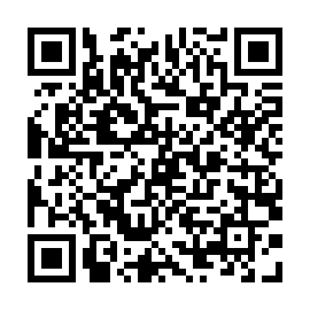

Tamil Cultural Association, IIT Bombay
Tamil Fest 2022 - Tickets
April 16, 2022 - LT PCSA, IIT Bombay
Coupon Code: l5n8d39epm
Name: Eswar R
Mobile Number: 9840238491
Mail Id: eswar.r@civil.iitb.ac.in
Category: Student/Proj. Staff
Type: Only for Tamizh Fest 2022
Coupon (Self): 1
Coupon (Guest): 3
Tot. Coupons: 4
Dinner Slot: 8:30 PM
Contribution:
Total Paid: 1240
